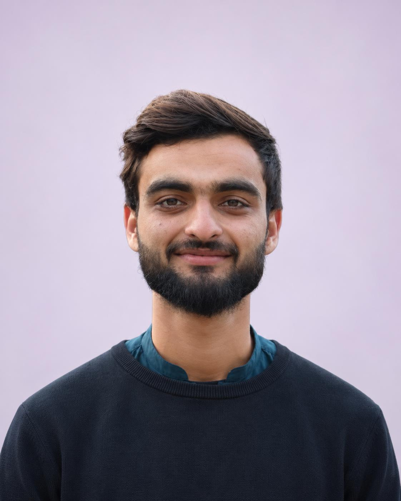

Mathematics graduate · Pakistan
Saad UllahCuriosity, grounded in mathematics.
I explore the mathematics behind cryptography, with interests in algebraic geometry and number theory. I am preparing for graduate study and enjoy sharing mathematics through teaching.

A little about me
Learning deeply.
Sharing openly.
My final-year project explored Elliptic Curve Cryptography—an intersection of abstract mathematical ideas and secure communication. Alongside my studies, I have taught mathematics and helped organize academic workshops and events.
Read my background ↗01 / Research · Final-year project
Elliptic Curve
Cryptography
Explore the project, its mathematical foundations, and my research supervisor’s profile.
Read the project ↗02 / Teaching
Clear ideas.
Confident learners.
From mathematics tutoring to practical LaTeX and Python workshops, I enjoy helping students understand the ideas behind each step and put them into practice.
 Learning through explanation, examples, and practice.
Learning through explanation, examples, and practice.03 / Experience
Learning happens
in community.
Contributing to conferences, alumni seminars, and mathematics competitions has given me opportunities to support academic exchange and work alongside students and faculty.
 Conversations and connections beyond the classroom.
Conversations and connections beyond the classroom.04 / Learning resources
Keep learning.
At your own pace.
Revisit the Python and LaTeX workshop materials, with lecture slides and recordings collected in one place.
Open the learning library ↗05 / Certificates
Milestones along
the way.
A record of teaching, event organization, competitions, and continued learning. Browse the certificates alongside the experiences they represent.
Browse certificates ↗ Teaching & academic participation ↗
Teaching & academic participation ↗